第 1 页 · 任务8.1

任务8.1
任务8.2
音乐创作
音频优化处理
任务8.3
配音制作
第 2 页 · 任务8.1 配音制作
任务8.1 配音制作
配音文本是配音制作的基础，优质的配音文本需贴合场景、语气适配、节奏合理。

第 3 页 · 8.1.1使用DeepSeek生成配音文本
8.1.1使用DeepSeek生成配音文本
（1）开启新对话
进入DeepSeek网页版，开启新对话，进入对话界面。
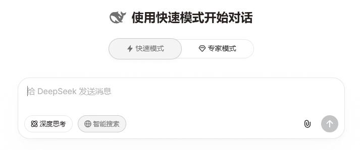
第 4 页 · 8.1.1使用DeepSeek生成配音文本
8.1.1使用DeepSeek生成配音文本
（2）输入提示词
结合生活类短视频场景需求设计提示词，明确语气、风格与节奏要求。
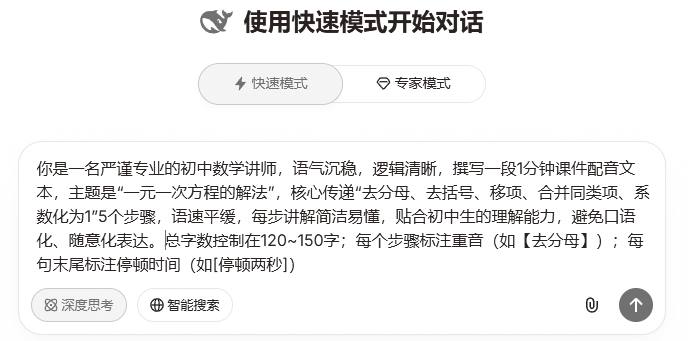
第 5 页 · 8.1.1使用DeepSeek生成配音文本
8.1.1使用DeepSeek生成配音文本
（3）生成文本
点击发送按钮，DeepSeek将自动生成贴合场景、语气适配、节奏合理的配音文本。
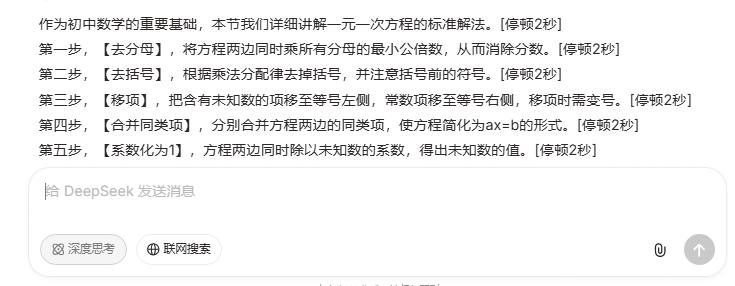
第 6 页 · 8.1.2使用TTSMaker制作配音
8.1.2使用TTSMaker制作配音

打开工具
访问TTSMaker官网
进入含文本输入框、音色调选等功能的界面
第 7 页 · 8.1.2使用TTSMaker制作配音
8.1.2使用TTSMaker制作配音
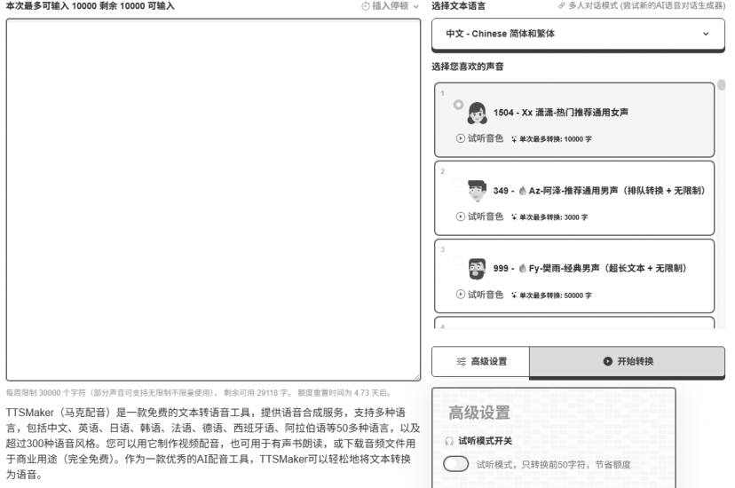

内容预处理
粘贴配音文本
删除停顿标记
标注多音字拼音
第 8 页 · 8.1.2使用TTSMaker制作配音
8.1.2使用TTSMaker制作配音

选择适配音色
按角色设定选适配音色
开启试听模式调整
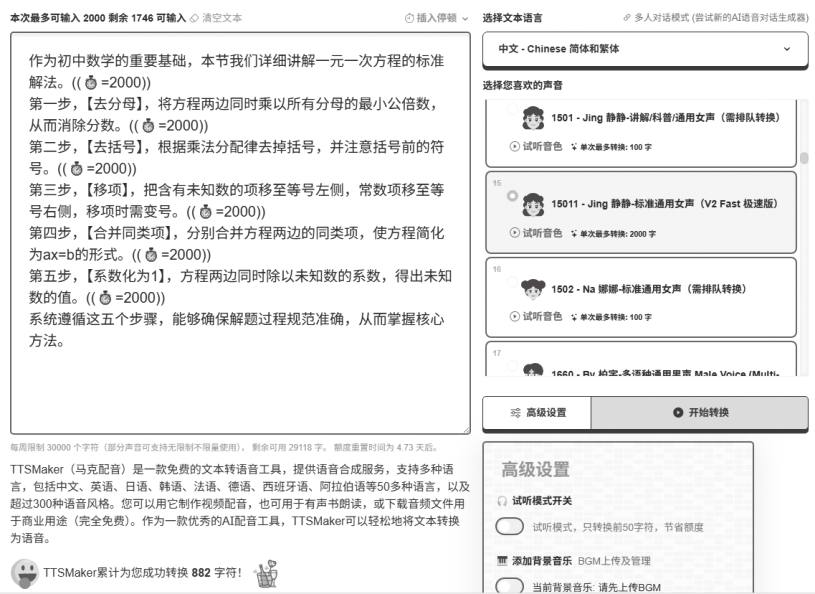
第 9 页 · 8.1.2使用TTSMaker制作配音
8.1.2使用TTSMaker制作配音

调节参数设置
调整语速、音量、音高
短视频建议语速0.95x、音量100%、音高+5%
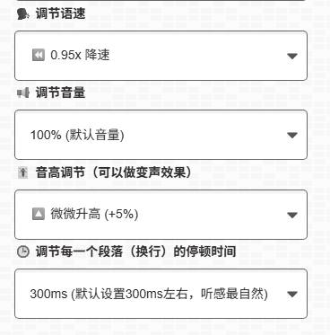
第 10 页 · 8.1.2使用TTSMaker制作配音
8.1.2使用TTSMaker制作配音

导出音频文件
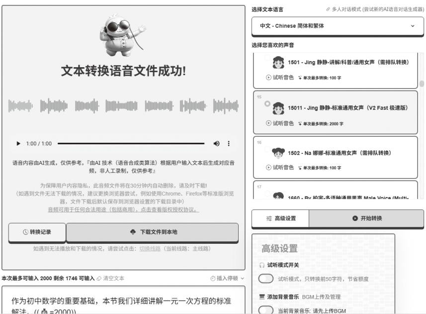
确认无误后选择MP3等音频格式
点击下载文件到本地

试听优化内容
点击开始转换后完整试听
排查读音、停顿、音量等
问题
调整后重新试听至满意
第 11 页 · 练一练
练一练
使用DeepSeek生成一段小学微课配音文本，提示词需明确场景、文本要求和配音适配性；再用TTSMaker将文本转换为配音，要求语气温和、语速稍慢，重点语句加重语气，无背景音乐，转换完成后检查效果导出音频。
第 12 页 · 8.1

8.1
8.2
音乐创作
音频优化处理
8.3
配音制作
第 13 页 · 任务8.2 音乐创作
任务8.2 音乐创作
豆包的音乐生成功能以“零门槛创作、高自由度定制、强传播适配”为核心特色，无须使用者具备专业乐理知识，普通人也能快速产出原创歌曲与纯音乐，适配短视频配乐、日常记录等多元场景。
第 14 页 · 8.2.1 使用豆包进行音乐创作
8.2.1 使用豆包进行音乐创作
操作准备
在豆包主界面选择“音乐生成”选项，即可进入创作功能界面。
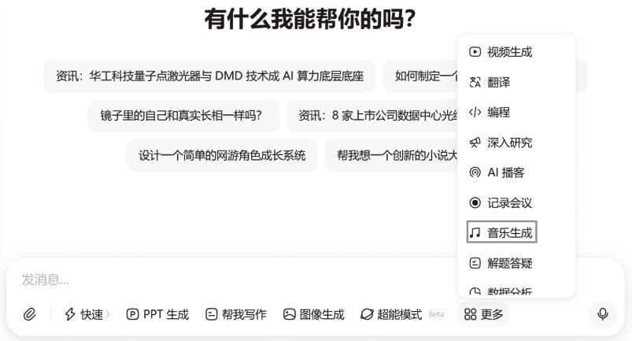
第 15 页 · 8.2.1 使用豆包进行音乐创作
8.2.1 使用豆包进行音乐创作
创作方式
AI帮写歌词：输入主题、设置参数后生成。
自定义歌词：先确认歌词再设置参数。
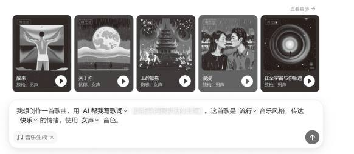
第 16 页 · 8.2.1 使用豆包进行音乐创作
8.2.1 使用豆包进行音乐创作
后续管理
生成后的歌曲支持收藏、分享操作，不再需要的歌曲可直接删除。

第 17 页 · 8.2.2使用海绵音乐进行音乐创作
8.2.2使用海绵音乐进行音乐创作
操作准备
进入海绵音乐网页版
点击左侧菜单栏“创作”进入创作界面
根据需要选择灵感创作、自定义写词或纯音乐功能

第 18 页 · 8.2.2使用海绵音乐进行音乐创作
8.2.2使用海绵音乐进行音乐创作
创作流程
以灵感创作为例
输入至少5字的灵感内容或选择推荐标签
点击“AI写词”生成两种风格歌词
可编辑风格后点击“生成音乐”
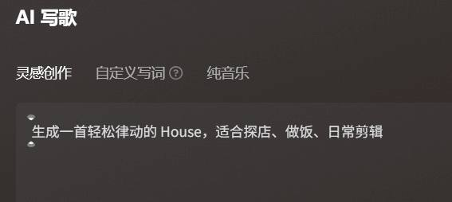
第 19 页 · 8.2.2使用海绵音乐进行音乐创作
8.2.2使用海绵音乐进行音乐创作
发布下载
内容确认无误后点击“发布”，音乐将自动存入“音乐库”，可后续进行分享、下载等操作。
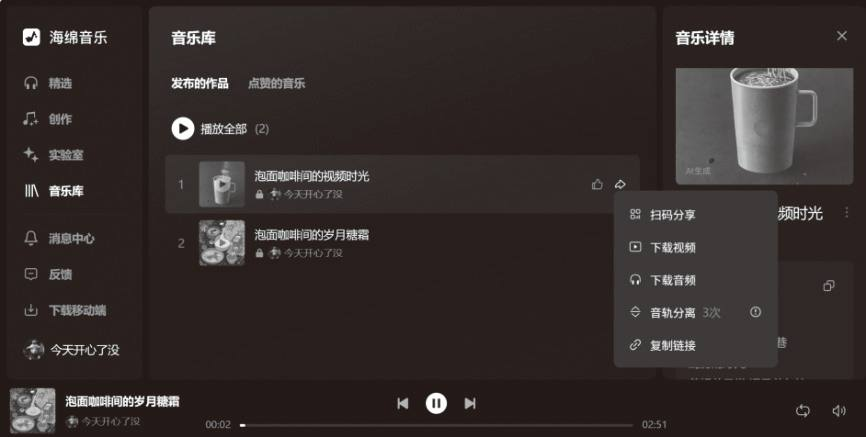
第 20 页 · 8.2.2使用海绵音乐进行音乐创作
8.2.2使用海绵音乐进行音乐创作
核心优势
平台风格多样、定制化程度高，创作内容无版权纠纷，可直接用于商用场景。
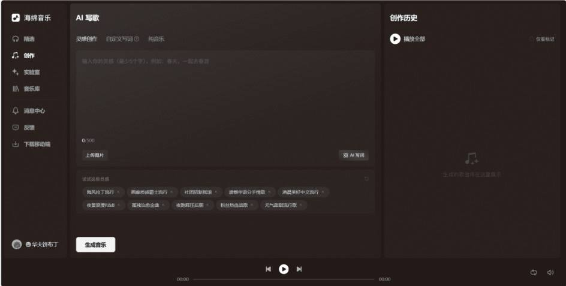
第 21 页 · 练一练
练一练
设计一段产品促销短视频配乐的音乐灵感，使用海绵音乐生成原创背景音乐，要求配乐激昂欢快、时长20秒，“电子琴+鼓伴奏”风格，无人声，可商用。
第 22 页 · 8.1
8.1
8.2
音乐创作
音频优化处理
8.3
配音制作
第 23 页 · 任务8.3 音频优化处理
任务8.3 音频优化处理
8.3.1音频优化
AudioCleaner AI平台概述
基于AI技术的在线音频编辑平台，无需安装，上传音视频即可专业处理，适配多类用户需求。
1 噪声去除
可自动识别清除多种杂音，保留自然人声，按流程操作后可试听下载，支持手动调整参数。
2 人声去除
基于深度神经网络分离人声与伴奏，支持乐器分离，按流程操作即可获取目标音频。
第 24 页 · 8.3.1音频优化
8.3.1音频优化
1 噪声去除
以对会议音频文件去除噪声为例。进入AudioCleaner AI平台后，在其首页的“噪声去除”菜单中选择“背景音频去除”命令。
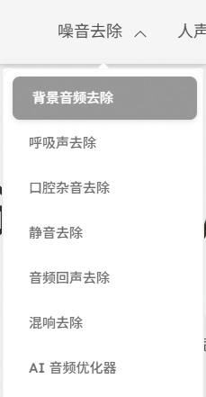
第 25 页 · 8.3.1音频优化
8.3.1音频优化
1 噪声去除
进入音频清理工具界面。单击“我的设备”按钮，在弹出的本地文件窗口中，选择需要处理的音频文件并完成上传。
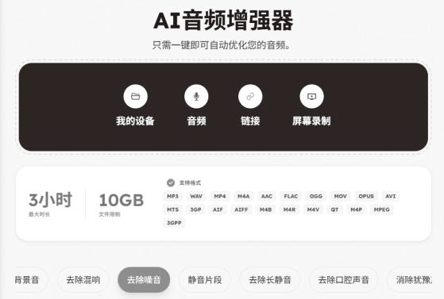
第 26 页 · 8.3.1音频优化
8.3.1音频优化
1 噪声去除
在“选择增强类型”中选择“去除噪声”选项，在“选择内容类型”中选择“会议”选项，然后单击“增强媒体”按钮，系统开始自动处理音频文件。
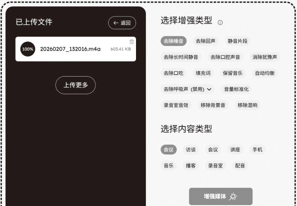
第 27 页 · 8.3.1音频优化
8.3.1音频优化
2 人声去除
以对歌曲音频文件分离人声为例，在首页的“人声去除”菜单中选择“歌曲人声去除”命令。
第 28 页 · 练一练
练一练
请准备两段音频：一段包含明显环境噪声（如风扇声、键盘声）的会议录音，以及一段带有人声的歌曲。将音频上传至—AudioCleaner AI 平台，完成以下操作：
（1）使用噪声去除功能，消除第一段音频中的环境噪声。
（2）使用人声去除功能，对第二段歌曲进行处理，分离出伴奏与人声。
第 29 页 · 8.3.2 AI音频处理——AudioCleaner AI
8.3.2 AI音频处理——AudioCleaner AI
1 AI音频翻译
AudioCleaner AI平台的AI音频翻译器可自动识别外语语音并将其转换为目标语言音频，方便用户快速理解与传播多语言内容。

2 AI音频转文本
AudioCleaner AI平台的AI音频转文本可将语音内容自动转换为文本，适用于会议记录、字幕生成、内容归档等文字化处理场景。
第 30 页 · 8.3.1音频优化
8.3.1音频优化
3 AI音频变声
对英语音频进行语音更换。在“AI工具”界面的“AI音频处理”中，选择“变声器”选项。单击“选择语音”按钮。
AudioCleaner AI平台的变声器支持将原语音转换为多种类型的声音，适用于内容配音、角色演绎、隐私保护等创意或实用场景。
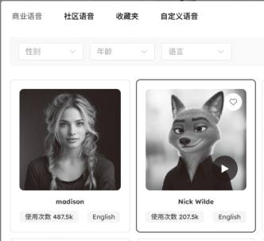